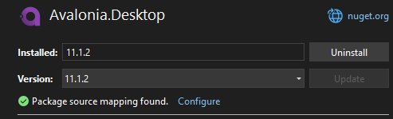

Visual Studio skacze do pliku [decompiled] zamiast oryginalnego
Po utworzeniu domyślnego projektu Avalonia (C#) przy użyciu kreatora Visual Studio może się okazać, że skakanie do definicji typów będzie otwierało [decompiled] źródła zamiast oryginalnych plików. To może być frustrujące, kiedy chcemy podpatrzeć jak Avalonia robi coś pod spodem. Naprawmy to.
Upewnij się, że masz zaznaczone następujące opcje w Tools > Options:
Text Editor>C#>Advanced>Go To Definition- ✅ Enable navigation to Source Link and Embedded Sources
- ✅ Always use default symbol servers for navigation
Debugging>General- ✅ Enable source server support
- ✅ Enable Source Link support
Jeśli pomimo zaznaczenia tych opcji skakanie do źródeł nie działa, to następnym krokiem będzie dodanie paczki do filtrów, które zezwolą IDE na pobranie źródeł Avalonia.
Zaznacz nuget.org jako źródło do źródeł Tools > Options > NuGet Package Manager > Package Sources
- ✅ nuget.org
Na koniec w Tools > Options > NuGet Package Manager > Package Source Mapping dodaj regułę Avalonia.*

Na koniec kliknij OK, aby zapisać zmiany.
Możesz teraz przejść do Project > Manage NuGet Packages... i w zakładce Installed wybierz jakąś paczkę Avalonia. W oknie po prawej stronie powinen pojawiś się zielony znaczek z informacją: Package source mapping found.

Przy niektórych paczkach może się pojawić zamiast tego informacja
A package source mapping will be created.
To oznacza, że źródła nie są pobrane w całości i będą zaciągane w miarę potrzeb. Może się zdarzyć, że skok do definicji typu przeniesie nas do kodu zdekompilowanego. Należy wtedy odczekać chwilę i spróbować skoczyć do typu ponownie. Jeśli źródła zostaną raz pobrane, to następne skoki będą już błyskawiczne. Visual Studio zapisuje pobrane pliki w katalogu %LocalAppData%\SourceServer\.
Powyższa procedura powinna również działać dla bibliotek innych niż Avalonia.